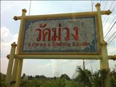
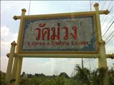
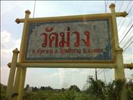
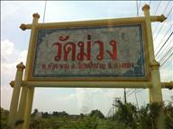

INDIVIDUAL STUDY &
THAI GEOSOCIAL DESIGN
Wat Muang (วัดม่วง จ. อ่างทอง)
 


 

อ่างทองเป็นจังหวัดเล็กๆที่อุดมไปด้วยแหล่งทรัพยากรการท่องเที่ยวที่น่าสนใจมากมาย โดยเฉพาะอย่างยิ่งทางประวัติศาสตร์ มีโบราณวัตถุ ศาสนสถาน ศิลปวัฒนธรรม ประเพณีวิถีชีวิต และ ธรรมชาติที่สรรค์สร้างจนเป็นเอกลักษณ์ของเมืองอ่างทอง แหล่งท่องเที่ยวในอ่างทองมีที่น่าสนใจ ไม่ว่าจะเป็นหมู่บ้านทำกลอง อ.ป่าโมก วัดอ่างทองวรวิหาร อ.เมือง วัดไชโยวรวิหาร(วัดเกษไชโย) อ.ไชโย และที่อื่นๆอีกมากมาย และสถานที่ที่เราจะไปกันนั้นก็เป็นสถานที่ท่องเที่ยวแนะนำ ถือว่าหากมาอ่างทองแล้วไม่ได้มาสถานที่นี้ถือว่ามาไม่ถึงอ่างทอง สถานที่นั้นนั้นคือ "วัดม่วง"
วัดม่วง ตั้งอยู่หมู่ที่ 6 ตำบลหัวตะพาน อ.วิเศษชัยชาญ ภายในวัดมีสถานที่สำคัญหลายแห่ง ทั้งพระอุโบสถล้อมรอบด้วยกลีบบัวสีชมพูขนาดใหญ่ที่สุดในโลก วิหารแก้ว ประดิษฐานพระพุทธรูปศักดิ์สิทธิ์องค์แรกองค์เดียวที่ใหญ่ที่สุดในประเทศไทย และอื่นๆที่น่าสนใจอีกหลายแห่ง
เว็บไซต์นี้เป็นส่วนหนึ่งของวิชา Individual Study (เป็นการเรียนการสอนที่เป็นให้ผู้เรียนเลือกหัวข้อ หรือเรื่องที่ตนสนใจเพื่อทำการศึกษาค้นคว้าอย่างละเอียด โดยใช้ระเบียบวิจัยที่เป็นแบบแผน เพื่อนำมาวิเคราะห์สำหรับการออกแบบต่อไป) และวิชา Thai Social Geographic Design (เป็นวิชาที่ศึกษาความหมายและคุณค่าของภูมิปัญญาท้องถิ่นต่างๆ เพื่อเข้าถึงคุณค่าภูมิปัญญาท้องถิ่น การออกแบบผลิตภัณฑ์ และที่อยู่อาศัยเพื่อให้สามารถนำไปประยุกต์ใช้กับสังคมในปัจจุบัน) อาจารย์ที่ปรึกษา รองศาสตราจารย์ ว่าที่ร้อยโท พิชัย สุกภิบาล สาขาวิชาครุศาสตร์สถาปัตยกรรมและการออกแบบ คณะรรุศาสตร์อุตสาหกรรม สถาบันเทคโนโลยีพระจอมเกล้าเจ้าคุณทหารลาดกระบัง